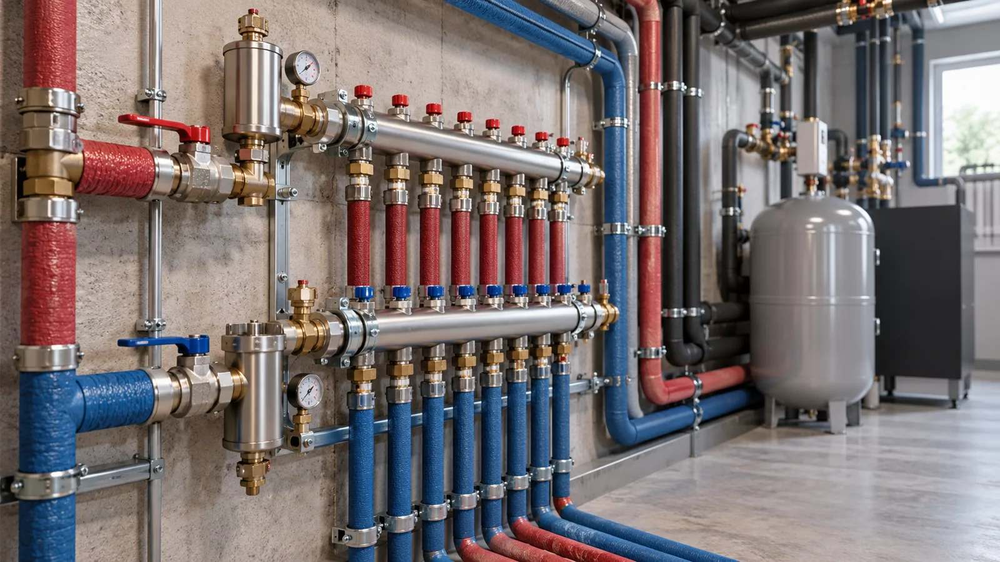

Suministro de agua
Distribución de agua fría y caliente, recorridos y conexiones a los equipos previstos.
EXPERIENCIA INTEGRADA
Ejecución de redes de agua y evacuación integradas en la estructura del edificio y en el uso de sus espacios.

Redes de suministro y distribución de agua
ÁREAS DE INTERVENCIÓN
Distribución de agua fría y caliente, recorridos y conexiones a los equipos previstos.
Redes interiores de saneamiento, bajantes y conexión de aparatos sanitarios.
Pruebas de estanqueidad, revisión de recorridos y coordinación de huecos y cierres.
UN ALCANCE BIEN DEFINIDO
La fontanería debe atender el uso cotidiano del edificio y permitir el acceso para comprobaciones. Preparamos redes de agua fría, caliente y evacuación coordinando sus recorridos con la arquitectura, los locales técnicos y los equipos previstos.
En viviendas, oficinas e industria revisamos puntos de consumo, recorridos verticales y horizontales y zonas que quedarán cerradas. Los materiales, conexiones y pruebas se acuerdan antes del montaje. Las necesidades de procesos industriales o equipos especiales se analizan por separado según la documentación.
Son útiles la ubicación, el tipo de edificio, la fase, los planos disponibles y el calendario previsto. Podemos empezar con lo conocido e identificar juntos qué hace falta aclarar.
Uso del edificio, documentación disponible, especialidades, calendario, acceso a obra y límites exactos de los trabajos.
Los materiales, equipos, pruebas y límites de obra se acuerdan después de revisar la documentación y las condiciones del emplazamiento.
CÓMO TRABAJAMOS
Hablar de objetivos, estado actual y documentación disponible.
Acordar el enfoque, las responsabilidades y la oferta por especialidad.
Organizar el equipo y la secuencia de trabajos según la obra.
Completar las comprobaciones acordadas y documentar la entrega.
PREGUNTAS FRECUENTES
Distribución de agua fría y caliente, saneamiento interior y conexiones de aparatos sanitarios dentro del proyecto y de la oferta aceptada.
Las fases se acuerdan con el equipo antes de cubrir las redes correspondientes. La solución técnica y los requisitos de obra determinan las comprobaciones.
Sí, tras revisar las redes y documentación disponibles. Las conexiones a instalaciones existentes y posibles cortes se acuerdan antes de comenzar.
VASTASIA CONSULTING GROUP
Cuéntanos la ubicación, el tipo de edificio y la fase del proyecto. Definiremos juntos el siguiente paso.